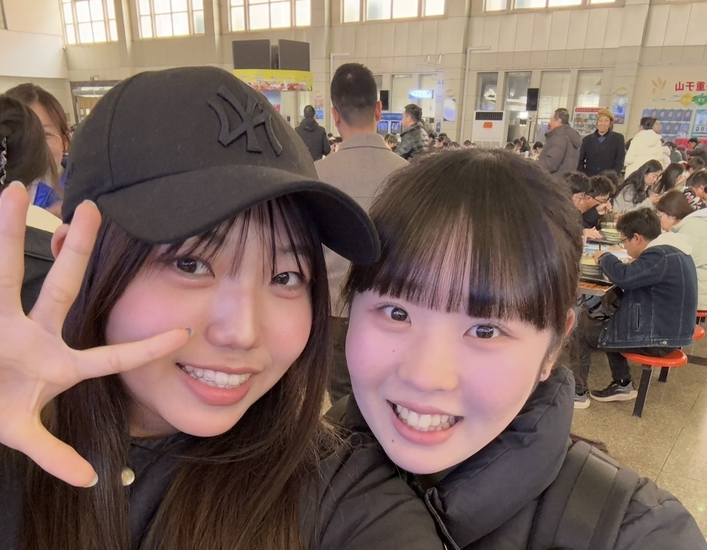
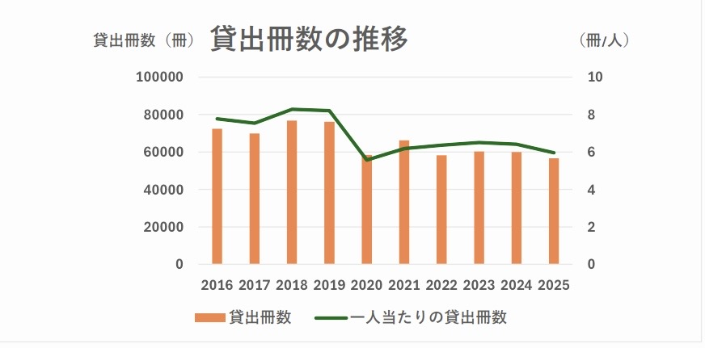
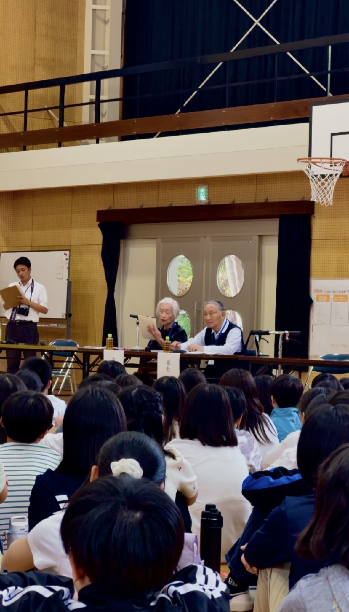
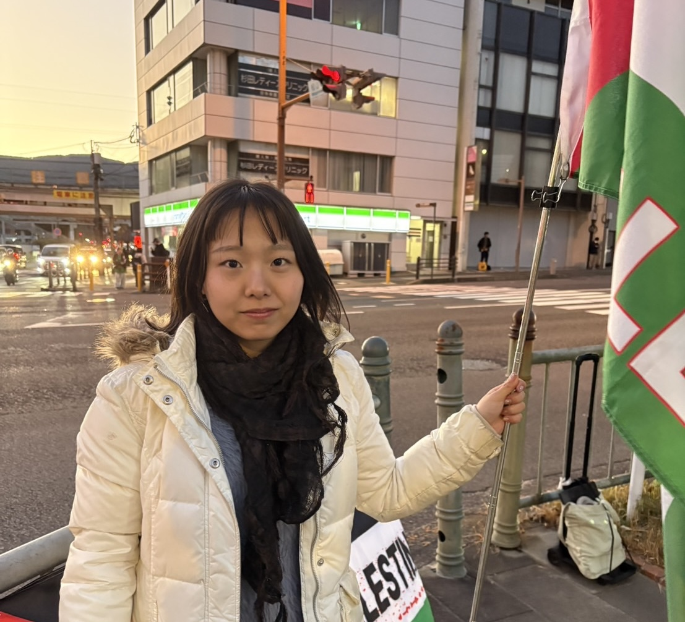
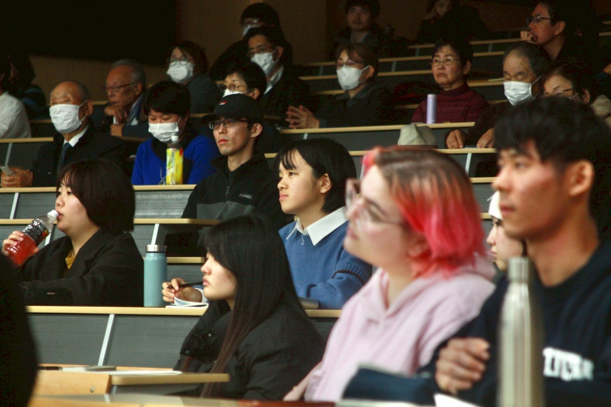

ニュース
いつものベンチに、もういない 長大生に愛された猫「モフモフ」
長崎大学文教キャンパスの名物猫として、学生や教職員、地域住民から長年愛された「モフモフ」が10月中旬、姿を消した。 キャンパス中庭のベンチやテーブルの上で、くつろぐ姿が人気だったモフモフ。大学職員…
2026-11-27続きを読む →
ニュース
長崎大学文教キャンパスの名物猫として、学生や教職員、地域住民から長年愛された「モフモフ」が10月中旬、姿を消した。 キャンパス中庭のベンチやテーブルの上で、くつろぐ姿が人気だったモフモフ。大学職員…
2026-11-27
インタビュー
自国の国旗を傷つけることを禁止する国旗損壊罪の成立や、皇族数確保に向けた皇室典範の改正など、国家のあり方を問う動きが相次いだ2026年。憲法学者の井田洋子さん（経済学部長、教授）は授業中で学生に意見…
2026-11-25
語ろう、性のこと。
「女は九州を出るな、親の目の届く範囲で暮らしてほしい」森元斎さん（多文化社会学部准教授）は、親の一言で東京の有名国立大への進学を諦めた福岡出身の女子学生の話を聞き、ショックを受けたといいます。社会の…
2026-11-25
インタビュー
日中関係の緊張は長崎大学の国際交流にも少なからず影を落としている。長崎大学でも今年2月に予定していた中国短期語学留学プログラムが中止になった。土井みつきさん（多文化社会学部3年）も、楽しみにしていた…
2026-10-31
ニュース
長崎大学附属図書館の2025年度貸出冊数は前年度比3400冊減の5万6594冊となり、2016年度以降過去最少となったことが長崎大学新聞部の調べで明らかになった。貸出冊数はコロナ禍に急減しその後回復…
2026-10-22
ニュース
「原爆学級」の記憶を次世代に伝える催しが16日、日本特別ニーズ教育学会の主催により長崎市立城山小学校で開かれた。原爆学級の卒業生2名と城山小学校の6年生95名が参加し、県外出身の学生にも被害者や当時…
2026-10-18
インタビュー
イスラエルとイスラム抵抗運動(ハマス)の停戦発効から約３か月。パレスチナ自治区ガザには未だイスラエルへの恐怖が渦巻いている。その現状に対し抗議の声を上げる学生がいる。環境科学部4年、今岡明日美さんは…
2026-02-17ニュース
「台湾有事は日本有事だと思うし、高市政権の軍備拡大にはすごい賛成」 今年4月から自衛隊の「予備自衛官制度」に申し込もうと考えているA氏（多文化社会・2年）は、こう切り出した。 予備自衛官とは、普…
2026-02-17
ニュース
長崎の将来を考える契機に 長崎大学新聞は12月19日、長崎大学文教キャンパスにて、2月8日投開票の長崎県知事選に向けた公開討論会「こがんじゃいかん！！」を開催した。 出馬を表明した5人の候補予定者…
2026-02-17